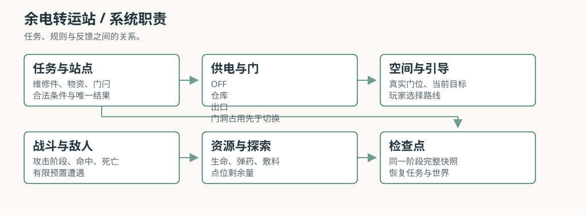
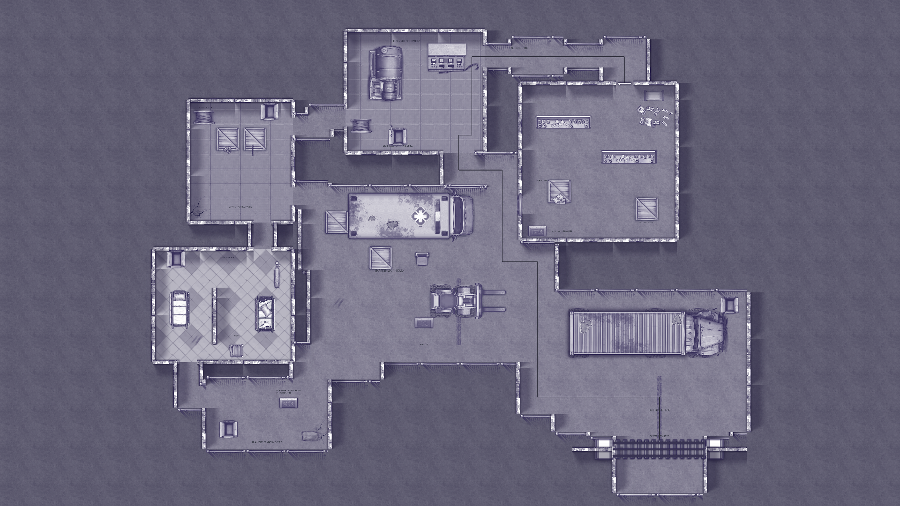
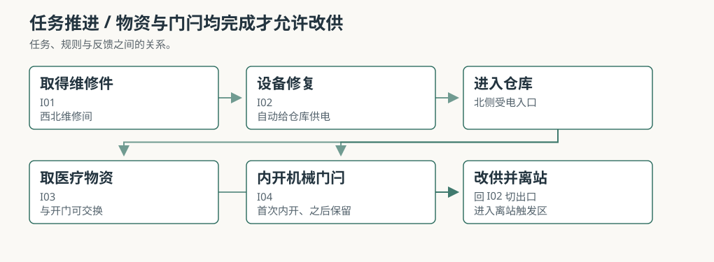
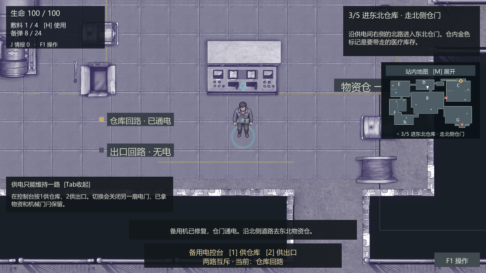
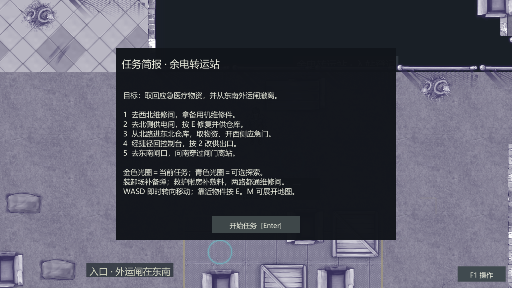

黄开元 / 系统策划作品集 / 2026-10-24
本文讨论《余电转运站》的场景与系统设计，范围限于空间、供电、路线、战斗资源与引导；不展开完整商业版的装备、成长或联机。文中的示意图与截图只用于说明结构。
1 研究范围与体验结论
1.1 这份案子的范围
余电转运站是一个 2D 俯视角生存探索场景。玩家作为幸存者营地的接应员，进入一座断电的应急转运站，取回医疗物资，再从东南外运闸撤离。场景围绕供电、通路、有限补给和预置遭遇组织，单局目标时长 15–25 分钟。
本文只讨论四件事：空间怎么组织、电怎么走、两条路怎么取舍、玩家怎么读懂状态。战斗、数值和美术只写到能支撑这些判断的程度，不展开成完整商业方案。文中的检查数据来自内部原型，不是商业版验收，也不等于真人试玩已经通过。
1.2 体验结论
取物必须改变返程。仓库和出口不能同时供电。玩家在仓库取到物资后，出口没有电，必须回控制台把电切到出口。仓内捷径又只能首次从内部打开，所以返程会走一条和去程不同的路。取物不只是一个任务标记，它改变了门禁、通路和回程方向。
状态必须可读。回路、门、线缆、灯和任务目标要表达同一状态。玩家应该能看懂门为什么关、出口为什么没电、下一步该去哪里，而不是反复试交互。屏幕上出现的每一个提示，都要能对应到场景里的一个真实对象。
路线差异必须能被感知。主路经过装卸场，备弹较多、空间开阔；外路经过救护附房，敷料较多、转角更碎。两条路都通往维修间，玩家选择的是到达维修件之前的资源和遭遇。路线差异要能在第一次走完时被说出来，而不是只存在于表格里。
1.3 设计口径
本文把完成定义为玩家带着医疗物资真正穿过外运闸。站在闸门前按一次交互、原路回到入口、或者只把闸门打开却没有穿过去，都不算完成。这个口径会影响后面对路线、供电和检查点的所有判断。
零可选收益也算完成。十二个可选点提供路线情报、备弹、敷料和可整理的通行设施，但主线不以全探索为条件。死亡按最近检查点恢复；恢复后位置、生命、弹药、敷料、任务标记、探索账本、设施和敌人状态回到该阶段，而不是只把玩家送回入口。
1.4 边界
角色是四向原型，没有完整背包、装备、跨次存档或联机。场景是原创概念案，不是商业版设计文档，也不是可公开试玩的原型说明。美术密度、转向手感、首次理解和两路平衡仍需真人确认；内部检查只能证明状态和流程被覆盖过。
2 场景结构与任务链
2.1 总平面
地图设计边界为 144D×78D，D 取 0.60 Unity 单位，对应约 86.4×46.8 Unity 单位，总面积约 11,232D²。扩建通过新增工作面、回环和探索段落完成，不整体拉伸场景素材。D 是走查碰撞直径，不是模型的视觉单位。
入口在南，维修间在西北，供电间在北侧中间，仓库在东北，外运闸在东南。整条线从西往东绕一圈，回程才有捷径可开；B 装卸场是回环的枢纽。A 区只负责开场识别两路，回入口不算离站。七个区不是七个孤立房间，而是任务链上的七个判断点。


2.2 七区的职责
A 南侧入口。入口道路、门岗和路线告示承担开场识别。玩家在这里第一次看到两条去程，要知道两条路都通维修间，而不是二选一。入口不作为完成出口，回头不算离站；这一点要在任务栏和场景标识里同时成立。
B 中央装卸场。车辆、货架、验货台和开阔绕行面把全站连起来。主路在这里补备弹，仓内捷径也从这里回到供电间。装卸场是回环枢纽，去程和返程都会经过它；它既要支持正面战斗，也要留出绕行的空车道。
C 东北物资仓。分拣货架、封存物资、北侧受电入口和西侧内开门构成任务核心。玩家从北门进仓，取得医疗物资，再从内部打开应急门。西侧捷径只能从里面开，这样取物才会改变返程；如果从外面就能打开，北门就失去意义。
D 北侧供电间。发电设备、控制台、检修面和两条出线构成供电系统。修复和切换在同一个控制台完成，不拆成两个点位凑交互数量。玩家第一次把电给仓库，取完物资后再回来把电切到出口；这个回头是整个场景的中心。
E 西北维修间。拆检装置、工作台、工具和存线构成维修工作面。两条去程都经过这里，维修件是整条链的物理前提；没有件，控制台不能修，没有电，仓库和出口都开不了。它放在最西，是为了让两条路都绕不开它。
F 西侧救护间。床位、隔断、候诊和应急包构成救护附房。外路从这里经过，补敷料、利用转角观察；隔断把视野切碎，近身遭遇更突然。救护间不是主任务点，但它让外路有自己的资源身份。
G 东南外运闸。排队带、车辆、门禁和南侧服务道构成离站段。正面可以交战，也可以从东侧服务道绕行；不要求全歼。真正的完成条件是向南穿过已放行的闸门，而不是在闸前按一次交互。
2.3 五个必需点
维修件、控制台、医疗物资、西侧应急门和外运闸构成五个必需点。维修件在 E 工作台取得，件从场景移除后可以送回 D；控制台在有件时修复，修复后选择回路；医疗物资在仓库取得，保留为主任务物资，不作为敷料消耗；应急门首次只能从仓内打开，开后永久双向通行；外运闸负责最终离站。
取物资和内开应急门可以交换顺序。玩家可以先拿物资再开门，也可以先开门再拿物资；只要离站前两者都完成。维修件不能跳过，控制台不能在没有件时修复；出口的完成条件绑定实际穿闸，在闸前按 E 只提供状态说明。这些规则让玩家有局部自由，但不放过必要条件。
2.4 取物与开门的可交换
把取物和开门做成可交换，是为了避免任务链变成一条固定按钮序列。玩家进仓后可以先观察货架和敌人位置，再决定先拿物资还是先开西侧门；两种顺序都会改变他离开仓库时的路线和遭遇。可交换不等于可以跳过，两个动作都必须完成。
如果两个动作被拆成前后强顺序，玩家就只需要跟着任务栏走，空间判断会退化成执行步骤。现在的做法保留了局部选择，同时用离站条件兜底；玩家可以按自己的节奏处理，但最终仍要把物资和通路都准备好。
2.5 回程捷径
仓内捷径只能首次从内部打开。这个限制让取物真正改变返程：玩家进仓走北门，出仓可以走西侧应急门，经 B 装卸场回控制台。返程不再是沿原路再走一遍，而是利用自己在仓内打开的新通路。
如果捷径从外面就能打开，玩家会在进仓前就把它当入口，西侧捷径会替代北门，C 的先进入再打开就不存在了。只能从里面开，取物才会改变返程路线，而不是只改一个任务标记。B 装卸场在去程和返程都被使用，承担全站回环枢纽的作用。
3 供电、门禁与失败状态
3.1 为什么只留一路电
备用供电只有一路，是我刻意留下的限制。如果仓库和出口能同时供电，玩家取完物资直接走就行，任务会变成一条直线；现在他必须在取完物资后做一个回头的决定，这个回头就是整个场景的中心。
一路电还让场景里的设备、门禁和通路围绕同一条限制安排：开仓库，就暂时不能开出口；取到物资以后，还要回头改供。这比单纯增加怪物或装饰，更能让玩家感到场景里的设施正在发挥作用。
3.2 两回路状态机
未修复时，仓库门和出口门都关；设备修复后，控制台可以给仓库或出口供电。仓库回路通电时，仓库门开、出口门关；出口回路通电时，仓库门关、出口门开。断电时两扇门都关，玩家需要恢复可用供电状态。
切换条件不只是电。设备未修复、物资未取或应急门未开时，控制台拒绝切到出口；玩家或活敌人占据将关闭的门洞时，保留原回路，离开门洞后再试。开关门与碰撞同步，切换不清除已取物资、已修复设备或已经打开的机械门闩。断电时不能新开消防或应急门。


3.3 门体与碰撞
门体和碰撞必须同步。门开着，玩家和敌人能通过；门关着，碰撞要真实挡住。切换回路时，如果门洞被玩家或活敌人占据，不能强行关门，否则会把角色夹进墙里。当前做法是保留原回路，等门洞空出来再允许切换。
已经打开的机械门闩不会因为切换回路而重置。玩家在仓库内部打开西侧应急门之后，即使把电切到出口，门闩仍然保持打开；这样回程捷径不会因为一次改供而失效。控制台只改变哪一路有电，不重置已经完成的物理动作。
3.4 条件反馈
缺维修件时，控制台要说明去西北维修间寻找；物资或门闩未完成时，要指出尚缺的步骤；门洞有人时，要说明切换未发生。出口无电时，闸门提示返回北侧供电间改供。任务信息、门、线缆和指示灯要用同一套状态语言，不能各自说一套。
条件反馈的目标不是替玩家做决定，而是让失败有解释。玩家按了控制台却没有反应，必须知道是因为缺件、缺物资、门洞被占，还是出口本来就没电。没有解释的拒绝，会让玩家以为是交互坏了。
3.5 离站判定
离站看位置，不看交互。在闸门前按 E 不会完成；向南穿过已放行的闸门才触发完成。外运闸的放行状态由出口回路决定，出口回路又要求设备修复、物资取得、应急门打开。玩家不能靠站在门口结算，G 的放行状态才有意义。
完成条件同时约束了任务链的终点。玩家可以把出口段敌人清掉，也可以走东侧服务道绕行；但只要没有真正穿闸，任务就还在进行。这个判定让最后一段不是一次按钮确认，而是一次空间上的离开。
3.6 检查点与恢复
入口、设备修复后、物资与捷径完成后、出口通电后有四个检查点。恢复内容包括位置、生命、弹药、敷料、任务标记、探索账本、设施与敌人状态；这是单次运行内的检查点，不是跨次存档。死亡界面说明原因，并提供恢复入口。
检查点按任务阶段分布，而不是按时间均匀分布。入口到修复、修复到取物、取物到改供、改供到离站，每段都有一个恢复点；死亡不会把玩家送回整局开头。恢复后玩家仍在同一阶段，不需要重新完成已经做过的主线动作。
4 路线、资源与探索
4.1 两条去程
两条去程都汇合在 E 维修间，区别在到达维修件之前的路。主路 A→B→E 经过装卸场，车辆与货架可换位，可选收益偏备弹；外路 A→F→E 经过救护附房，隔断多，补给偏敷料。B→D 允许玩家提前观察控制台需要什么，但修复仍要求维修件，不能跳过。
主路的压力在开阔区的距离和弹药消耗，外路的压力在转角的近身和恢复资源。主路不是更难，外路也不是更简单；它们把压力放在不同位置。当前自动策略偏向外路，但这不能证明真人难度已经等价，两路的真实平衡仍要看玩家第一次走完后的资源余量和受伤记录。
4.2 资源差异
生命上限 100，初始备弹 8、上限 24，初始敷料 1、上限 4，每份敷料恢复 35。备弹决定你能多打几个遭遇，敷料决定你能扛几次失误。主路补备弹，外路补敷料；玩家在入口选择路线时，实际上是在选择自己更怕弹药不够，还是更怕恢复不够。
补给满容量时，未领取部分留在原地，不会无限刷新。主任务医疗物资和恢复用敷料分开，拿到任务物资不等于取得治疗资源。这个区分让取物和补给成为两条不同的线，避免玩家把任务目标当成一个大血包。
4.3 十二个可选点
可选点分四类：路线情报、备弹、敷料和可整理的通行设施。它们不提供隐藏主线密码，主任务不以全探索为完成条件。路线情报提前说明维修间、供电间、仓库和出口的关系，降低第一次读图的成本；备弹支持主路更主动地处理遭遇；敷料支持外路在转角遭遇后继续推进。
两处可整理设施会真实改变侧道通行。O04 整理回收器具、清扫破损片后开放箱体之间的南北侧道；O09 收束备线后开放备件架后的检修通道。设施收益不是任务标记，而是玩家能走的新路线；这一点让可选探索和空间发生关系，而不是只给资源。
可选点不替代主任务，也不应被误设成必要条件。零可选收益的玩家仍然可以完成主线；如果某个可选点变成必须，任务链就会从主线设计变成收集设计。完整点位表放在附录 A。
4.4 环境叙事
18 个纯环境叙事点分布在工作面和通路附近，展示装卸中断、退货分拣、维修拆检、救护改造与未完成外运。它们用于建立转运站的作业关系，不和任务物资、有限补给混为一类。环境叙事不制造虚假交互，玩家不需要逐个点开才能推进。
这些点位让七个区看起来像同一次转运工作被打断，而不是七个互不相关的布景。车辆、货架、拆检装置、床位和外运单指向同一条作业链；玩家在读空间时，也在读这里曾经发生过什么。
4.5 零可选与回程
零可选收益也能完成主线，是对路线设计的底线检查。如果玩家不领任何补给和设施收益就走不通，说明可选点被误设成必要条件。零可选路线资源更紧，但仍然要能完成取物、开门、改供和离站。
回程利用仓内捷径回到 B，再去控制台或外运闸。B 在去程和返程都被使用，是回环枢纽；没有 B，仓内捷径就只是一条死路。G 的服务道则给最后一段一个可绕行的选择，让出口不必全靠正面交战。
5 战斗与敌人
5.1 战斗的职责
站内预置 9 名敌人，分为 5 组遭遇，没有无限增援或随机背刷。战斗制造路线与资源压力，不要求全歼。击倒敌人以后留下更安全的通行空间；绕开敌人也是完成任务的方法。战斗不是主要内容，而是让玩家在路线和资源之间做判断的压力源。
5.2 三种威胁
近身压迫型感知后接近，准备攻击，脱战后返回。它的作用是施加距离压力，逼玩家换位或提前出手；玩家可以绕柱、穿门、退开再出手。区域攻击型对停留区域准备范围攻击，事先给预兆；玩家要看落点换位，避开生效区域。出口群体与侧道则把正面排队带和东侧服务道都打开，玩家可以留弹药处理出口，也可以走服务道绕行。
三种威胁对应三种空间问题：距离、落点和出口选择。近身型让开阔区不安全，区域型让站桩不安全，出口群体让最后一段需要决定打还是绕。敌人不是按血量堆出来的，而是按它们在空间里制造的压力分工。
5.3 玩家战斗
角色为四向原型。WASD 立即决定移动和身体朝向，静止鼠标不抢回方向；鼠标攻击朝向点击点，F/Q 按当前意图方向出手。攻击开始后锁定本次方向，攻击忙碌期移动速率为正常状态的 35%。这是战斗约束，不是卡顿；玩家需要在出手和换位之间做取舍。
近战包含准备、生效和恢复阶段，一次挥击对同一目标只结算一次。远程有实际移动的弹体，墙体和大件参与遮挡与命中。受击提示要让玩家知道威胁来自哪一侧，倒地后显示原因和检查点恢复入口。攻击方向、受击方向和死亡原因要能互相对上。
5.4 资源循环
战斗消耗生命和备弹，敷料恢复生命。玩家每打一个遭遇，都在用弹药换通行空间；每挨一次攻击，都在用敷料换继续推进的机会。资源有限，满容量时剩余补给留在原地；这迫使玩家决定哪些遭遇值得打，哪些可以绕。
主路备弹多，外路敷料多，但两条路都可能遇到资源不够的情况。资源不够时，玩家可以选择绕行、退回检查点，或者用更谨慎的走位减少受伤。战斗系统的目标不是让玩家清空全站，而是让资源决策和路线决策互相影响。
5.5 遭遇节奏
5 组遭遇分布在入口、装卸场、救护区、仓内和出口。入口是单体学习，装卸场是主线压力，救护区是转角压力，仓内是混合观察，出口是最后的选择检查。每组遭遇都给绕行方式，不封路；玩家可以用战斗解决，也可以用空间解决。
没有无限增援或随机背刷，意味着玩家可以记住遭遇位置和绕行路线。固定遭遇让路线规划有意义；如果敌人随机背刷，玩家就无法判断资源该留到哪一段，路线差异也会被随机性冲掉。
5.6 战斗边界
四向角色原型，没有完整装备、背包、联机或跨次存档。战斗深度控制在能形成压力、不抢走探索的范围内；后续是否增加深度，要看真人试玩是否觉得战斗太浅，而不是先扩系统。当前 9 名敌人、5 组遭遇已经能形成路线压力。
6 引导与可读性
6.1 五步简报
新开局暂停显示总任务与五步简报，按 Enter 或点击开始任务进入。简报把总任务、当前步骤、地点和推进条件同时说清楚，避免玩家只看到目标却不知道下一步。仓内取物与开门合成一个阶段，玩家不会只看到去仓库而不知道需要做哪两件事。

6.2 任务栏
任务栏持续显示总任务、当前步骤、地点和推进条件。玩家在场景里移动时，不需要打开面板就能知道下一步；任务栏不替玩家画路线，只说明目标和原因。完成或领取完毕后，对应标记消失，避免旧信息干扰。
6.3 目标与可选光圈
金色光圈和菱形表示当前必要交互，青色表示可选探索与剩余补给。靠近有效操作面显示 E；完成或领取完毕后，标记消失。物资、门和地图使用相同目标关系，减少反复找路。光圈不改变碰撞和门禁，只做提示。
金色和青色要能一眼区分。金色是主线，青色是可选；如果两种颜色混在一起，玩家会把可选点当主线，或者把主线当可选。当前做法是同一套形状语言，用颜色区分优先级。
6.4 小地图与展开地图
右上角小地图读取真实布局、墙体、门位和玩家朝向；白色箭头为玩家，金色为当前目标，青色为可选点。开关门用不同颜色与形状表达。首次进仓前，目标先指北门，进仓后再指物资，避免把西侧内开捷径误认为入口。
按 M 展开地图并暂停，关闭后恢复原有暂停状态。地图不画完整路线，不提供自动寻路，保留玩家的路线判断。展开地图遇到可见敌人时会暂时降低透明度，让出视野；这是有意的设计，不是遮挡 bug。
6.5 刻意不做的事
不把完整路线画成一条线，不做自动寻路，不用金色箭头替玩家做决定。引导只回答为什么去和在哪，路线本身仍然是玩家的决策。玩家可以第一次跟着光圈走，第二次凭记忆走；两种走法都要能完成。
6.6 已知反馈
早期试玩里最常出现的问题是下一步去哪。简报、任务栏和光圈解决了一部分，但还需要观察玩家是否真的按维修件到供电、仓库、改供、闸门的顺序走。转向手感、攻击恢复期、小地图密度和美术细节也仍需真人确认；自动检查不能替代这些判断。
7 内容规模与验证
7.1 规模
场景有 7 个功能区、30 个空间段、35 个点位：5 个必需交互、12 个可选探索、18 个环境叙事点。敌人 9 名、5 组遭遇，检查点 4 个，两条去程加一条仓内捷径和一条外运服务道。单局目标 15–25 分钟，首次读空间约 20–25 分钟，熟悉路线后可压到 15 分钟左右。
这些数量是设计量，不是渲染物件数。30 个空间段描述可行走和视线关系，35 个点位描述交互与叙事，9 名敌人描述压力分布；它们不能直接相加成场景物件总数，也不能用来估算美术工作量。
7.2 检查数据
内部原型累计 303 项功能检查：转向、简报、地图、光圈 32 项；引导 47 项；战斗 52 项；探索收益与设施 100 项；核心任务 37 项；主路连续流程 18 项；外路连续流程 17 项。另有 58 组实际界面检查，覆盖 1280×720、1280×800、1680×720 三种画幅。
主路和外路各有一条连续流程，用真实移动、有限资源和实际战斗推进。检查包含不同层次的断言，不是所有项目都在验证同一件事；具体表在附录 D。构建记录为 0 错误、0 警告，只说明构建和状态检查通过。
7.3 数字怎么读
这些数字是检查项，不是游戏质量分。它们能说明状态和流程被覆盖过，不能说明第一次玩的人一定读得懂，也不能替代手感、美术和难度平衡的真人判断。把检查数当质量分会误导；把全绿当好玩也会误导。
路线平衡也不能只看自动策略。当前自动策略偏向外路，但这不能证明真人难度已经等价；需要用真人记录受伤、弹药和敷料消耗，才能判断主路和外路是否各自成立。
7.4 还没验证的部分
首次理解、转向手感、攻击恢复期、美术密度、小地图可读性和两路难度平衡仍需真人试玩确认。四向角色是原型，不是完整原作动画；墙体、地面和零散摆件的细节仍偏原型，氛围成立不等于达到商业关卡的平均画面水平。
7.5 构建与范围
原型使用四向角色、预置遭遇和单次运行检查点；没有完整背包、装备、跨次存档、联机或商业化系统。本文讨论的是场景设计，不是商业版完成度。后续修改要先确认场景结构和任务链，再考虑是否扩系统。
8 复盘与取舍
我最先定下来的不是场景长什么样，而是电这件事。转运站里仓库和出口都要用电，但备用供电只有一路；玩家每开一扇门，都要先想清楚另一头会不会断电。这个取舍比再摆几具尸体更能让我觉得这里在运转。
两条路的资源差别是我故意做偏的：主路备弹多、视野开，外路敷料多、转角多。我不想让玩家在入口就算出最优解，而是凭第一感觉选，走完再后悔或庆幸。仓内捷径只能从里面开，也是同一个道理：取物必须改变返程，而不是只改一个任务标记。
在早期原型里，试玩的人最常问的是下一步去哪。我加了五步简报、目标光圈和小地图，但没把路线画成一条线，只标当前目标和可选点，剩下的路让玩家自己走。引导应该回答为什么去，不该替玩家走。
我没做完整的背包、装备和跨次存档。这个原型的目标是让评审在几分钟内看懂取物、供电、开门、撤离这条链，而不是假装它是一个完整游戏。如果再多两天，我会先补墙体和地面的细节密度，再用真人试玩把主路和外路的难度拉平；现在这两块我只能说能玩，不敢说平衡。
8.1 三个判断
先让路线走通。灰盒阶段先把墙、门、关键道具的净空跑通，正式件后面再上；走不通的漂亮场景没有意义。
先让状态可见。指示灯、小地图、目标光圈都是为了回答门为什么关、下一步去哪；玩家看不懂状态时，氛围只是噪音。
先保留回头。取完物资直接走，场景就散了；所以电必须只有一路。这个约束比再加一种敌人更重要。
8.2 如果再多两天
如果再多两天，我会先补墙体和地面的细节密度，再把主路和外路各跑几遍真人试玩，记录受伤、弹药和敷料消耗。路线平衡不是靠自动策略算出来的；只有真人走完，才知道主路的开阔和外路的转角是否各自成立。
9 调整方向
9.1 优先级
第一，墙地细节与空间密度。先把墙体、地面、工作面和零散摆件的密度补到能支撑转运站的日常作业感，再谈更复杂的战斗或叙事。空间关系已经成立，但画面细节还没有达到商业关卡的平均水平。
第二，两路真人平衡。记录第一次路线选择、受伤、弹药和敷料消耗，确认主路和外路的代价是否真的不同；不用自动策略的结果替代真人判断。主路不是更难，外路也不是更简单，平衡要看玩家走完后的资源余量。
第三，引导与小地图可读性。观察玩家是否能在不口头提示的情况下完成取物、改供、离站，以及小地图和光圈是否在战斗中被忽略。引导解决的是目标和原因，不是替玩家画路线。
第四，战斗深度按需增加。当前 9 名敌人、5 组遭遇已经能形成路线压力；在没有确认战斗太浅之前，不扩装备、背包或成长系统。先确认场景成立，再考虑系统扩展。
9.2 暂时不做的事
暂时不扩完整背包、装备、跨次存档、联机或商业化系统。四向角色、预置遭遇和单次运行检查点已经足够支撑这次场景判断；在没有真人反馈之前，加系统只会增加解释成本。先把空间、供电和路线打磨好，再考虑下一步。
附录 A 七区与点位
| 区域 | 空间组织 | 玩法作用 |
|---|---|---|
| A 南侧入口 | 入口道路、门岗、路线告示 | 开场识别两路；回入口不算离站 |
| B 中央装卸场 | 车辆、货架、验货台与开阔绕行面 | 主路补备弹；连接仓内捷径与供电间 |
| C 东北物资仓 | 分拣货架、封存物资、北侧受电入口、西侧内开门 | 取主任务物资，并改变返程路线 |
| D 北侧供电间 | 发电设备、控制台、检修面与两条出线 | 修复供电与仓库/出口改供 |
| E 西北维修间 | 拆检装置、工作台、工具与存线 | 两条去程的共同目标；取得维修件 |
| F 西侧救护间 | 床位、隔断、候诊与应急包 | 外路治疗资源；转角观察 |
| G 东南外运闸 | 排队带、车辆、门禁与服务道 | 最后一段可战可绕，实际穿闸离站 |
| 点位 | 对象 | 条件与操作 | 完成后状态 |
|---|---|---|---|
| I01 | 维修件 | 在 E 工作台取得 | 件从场景移除，可送回 D |
| I02 | 控制台 | 有件时修复；修复后选择回路 | 初次给仓库供电，取物后可改供出口 |
| I03 | 医疗物资 | 进入仓库取得 | 主任务物资保留，不作为敷料消耗 |
| I04 | 西侧应急门 | 首次只能从仓内开门闩 | 开后永久双向通行 |
| I05 | 外运闸 | 查看放行状态，实际穿闸离站 | 满足撤离条件后完成任务 |
| 点位 | 名称 | 备弹 | 敷料 | 收益 |
|---|---|---|---|---|
| O01 | 入口路线告示 | 0 | 0 | 西北维修间存放零件，北侧供电间控制门禁；东北物资仓保存医疗库存，东南外运闸负责离站。 |
| O02 | 退回包装登记 | 2 | 0 | 退回包装中发现少量封存备弹，领取与任务物资无关。 |
| O03 | 验货交接记录 | 6 | 0 | 装卸场东侧器具回收岛有破损片，靠边观察再通过；清出侧道后可从箱体间绕行。 |
| O04 | 回收器具与侧道清理 | 0 | 0 | 收拢空包装并清扫回收岛破损片，开放箱体之间的南北侧道。 |
| O05 | 破损退货记录 | 0 | 0 | 完好货位与损坏退货分开登记；未入账的退货不能替代主任务物资。 |
| O06 | 出仓复核单 | 4 | 0 | 复核台保留少量备弹，供出仓后备用；仓内机械门闩需在内部开启。 |
| O07 | 维护标记 | 0 | 0 | 备用机仅能同时维持一条门禁回路，切换不会重置已拿物资或机械门闩。 |
| O08 | 拆检记录 | 0 | 1 | 拆检台确认所需零件在本间中部工作台；附带一份敷料，不消耗任务维修件。 |
| O09 | 备线收束与检修侧道 | 0 | 0 | 将散落线盘归置到西北存线位，开放备件架后侧检修通道。 |
| O10 | 床边应急包 | 0 | 2 | 取得独立应急敷料；东北仓库的任务医疗物资保持原样。 |
| O11 | 转运记录 | 0 | 0 | 救护附房转角较多，可先在隔断端观察；回收岛破损片可绕行，或在器具点清理后通过。 |
| O12 | 未签外运单 | 0 | 0 | 排队带已被感染体占据。南侧空车道通往东侧服务道，可从东侧接近放行闸；无需全歼。 |
附录 B 供电与门禁
| 状态 | 仓库门 | 出口门 | 主线下一步 |
|---|---|---|---|
| 未修复 | 关 | 关 | 取得维修件并修复设备 |
| 仓库回路 | 开 | 关 | 进仓取物并内开应急门 |
| 出口回路 | 关 | 开 | 前往东南外运闸离站 |
| 断电 | 关 | 关 | 恢复可用供电状态 |
| 规则 | 执行方式 |
|---|---|
| 单回路 | 仓库与出口同时只能亮一路 |
| 切出口条件 | 设备已修复、物资已取、应急门已开 |
| 门洞占用 | 玩家或活敌人占据将关闭的门洞时，保留原回路 |
| 状态保持 | 切换不清除已取物资、已修复设备或已开机械门闩 |
| 断电限制 | 断电时不能新开消防或应急门 |
| 离站 | 向南穿过已放行的外运闸，闸前交互不算完成 |
附录 C 资源与战斗参数
| 资源 | 初始 | 上限 | 使用与取得 |
|---|---|---|---|
| 生命 | 100 | 100 | 受击与环境危险降低，敷料恢复 |
| 备弹 | 8 | 24 | 射击消耗，可选点提供有限补给 |
| 敷料 | 1 | 4 | 每份恢复 35；满血不消耗 |
| 参数组 | 配置值 |
|---|---|
| 近战伤害 / 距离 / 半角 | 24 / 1.25 / 55° |
| 近战前摇 / 生效 / 收招 | 0.18 / 0.09 / 0.30 秒 |
| 远程伤害 / 弹速 | 22 / 32 单位每秒 |
| 远程前摇 / 收招 / 弹体寿命 | 0.12 / 0.32 / 1.0 秒 |
| 玩家受击保护 | 0.65 秒 |
| 首次学习型生命 | 48 |
| 近身压迫型生命 | 68 |
| 定点蓄爆型生命 | 52 |
| 组别 | 遭遇 | 敌人数 | 绕行方式 |
|---|---|---|---|
| A | 入口后的单体学习 | 2 | 可后退回入口观察，不封路 |
| B | 装卸场主线压力 | 2 | 沿西侧验货线前往维修间；中央回环可换角度 |
| F | 救护区转角压力 | 1 | 担架外侧操作带；退到候诊区脱战 |
| C | 仓内混合观察 | 2 | 双分拣带改变接敌顺序；不要求全灭才取物 |
| G | 出口前选择检查 | 2 | 南侧空车道通向东侧服务道，再从东侧接近闸口 |
附录 D 检查摘要
| 验证范围 | 数量 | 覆盖内容 |
|---|---|---|
| 转向、简报、地图、光圈专项 | 32 项 | WASD 朝向、开场简报、M 地图和目标标记 |
| 引导回归 | 47 项 | 任务栏、交互提示、阅读栈与实物关系 |
| 战斗校准 | 52 项 | 近战、弹体、受击、死亡与敌人行为 |
| 探索收益与设施 | 100 项 | 12 个可选点、容量、设施和门体 |
| 核心任务 | 37 项 | 维修、供电、取物、应急门、改供和离站 |
| 主路连续流程 | 18 项 | 有限资源与实际战斗流程 |
| 外路连续流程 | 17 项 | 有限资源与实际战斗流程 |
| 实际界面 | 58 组 | 1280×720、1280×800、1680×720 |
| 检查点 | 保存阶段 | 恢复后的主要行动 |
|---|---|---|
| 入口 | 初始任务与资源 | 重新选择路线并取维修件 |
| 设备修复后 | 仓库已通电 | 前往仓库 |
| 物资与捷径完成后 | 已取物资，机械门闩已开 | 返回控制台改供 |
| 出口供电后 | 出口回路与放行状态 | 前往外运闸撤离 |
功能项目合计 303 项，另有 58 组界面检查；构建记录为 0 错误、0 警告。以上是内部原型的检查摘要，不是商业版验收。首次理解、转向手感、美术密度和两路难度平衡仍需真人试玩确认。
附录 E 边界与来源
| 来源 | 内容 | 说明 |
|---|---|---|
| 个人场景设计稿 | 空间、任务、供电、战斗、资源、引导 | 本文的主要设计依据 |
| 自绘系统图 | 任务关系、双回路状态 | 图 P01、P03，用于说明结构 |
| 个人原型记录 | 全图、控制台、任务简报 | 图 P02、P04、P05，仅用于结构说明 |
本文为个人原创概念案，不是商业版设计文档，也不是可公开试玩的原型说明。角色是四向原型，没有完整背包、装备、跨次存档或联机；美术、手感和两路平衡仍需真人确认。